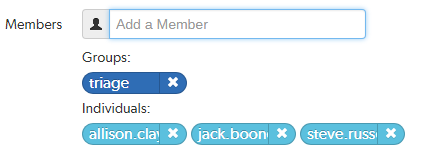

Membership
Membership in a Swarm project identifies users as belonging to the project, making them part of the team.
The are only a few notable differences between project members and non-members:
| Difference | Member | Non-Member | Description |
|---|---|---|---|
| Notifications | Members receive project notifications; non-members do not. | ||
| Avatars | The project's home page features member's avatars. | ||
| States | Members can transition code review states; non-members cannot. |
There are two ways to become a member of a project in Swarm:
- Add a project and make yourself a member.
-
Ask a member of an existing project to add you as a member.
NoteIf the project has any owners specified, you need to ask a project owner to add you as a member.
Users with super privileges in Helix server can always adjust the settings for any project, including adjusting membership.
Add a member
If you are an owner of a project, or a member of a project without specified owners:
- Visit the project page that needs the new member.
- Click Settings in the project's toolbar.
-
The Members text field lets you specify a Swarm project, Helix server group, or Helix server user to add to the members for this project. The field auto-suggests projectids, groupids, and userids by matching what you have typed so far against the list of users in the Helix server.
When you specify a project or group, all of the members of that project or group become members of this project. Swarm does not display all of the individual users, but it does provide a visual separation: project or group names are displayed first, with a darker blue background.
When you hover your mouse over a member project or group, a tooltip appears displaying up to 100 of the userids of the project's or group's users.
- Click Save.
Remove a member
If you are an owner of a project, or a member of a project without specified owners:
- Visit the project page that has a member you want to remove.
-
Click Settings in the project's toolbar.
Known members of the project are displayed beneath the Members text field, with a medium blue button representing projects or groups and a light blue button representing individual users.
- Click the X next to the project id, group id, or userid you want to remove.
- Click Save.
You are able to remove your own membership or ownership. Doing so could prevent you from managing the project.
Owners
A project owner is a Helix server user that controls the configuration for a project. An owner does not need to be a member of a project, but once the Only Owners and Super Users can edit the project check box has been selected, only an owner or user with super privileges in Helix server can edit any project settings.
- The Owners field is only displayed when the Only Owners and Administrators can edit the project check box is selected for the project.
-
By default, if the Only Owners and Administrators can edit the project check box is selected for a project, only the project owners and administrators can view the project Settings page.
This behavior can be changed by your Swarm administrator to allow project members that are not owners or administrators to view a read-only version of the project Settings page, see Allow project members to view project settings. The project Automated Tests and Automated Deployment details are hidden from project members unless they are an owner or an administrator. This enables project members to check the project settings but not change them.
Moderators
A project moderator is a user assigned to moderate reviews for a specific branch associated with a project. See how to specify moderators.
When Only Moderators can approve or reject reviews is set for a project branch, changing the state of any review associated with the moderated branch is restricted as follows:
- Only moderators can approve or reject the review. Moderators can also transition a review to any other state.
-
The review's author, when not a moderator, can change the review's state to Needs review, Needs revision, Archived, and can attach committed changelists.
Normally, the review's author cannot change the review's state to Approved or Rejected on moderated branches. However, authors that are also moderators have moderator privileges, and may approve or reject their own review.
When
disable_self_approveis enabled, authors who are moderators (or even users with admin privileges) cannot approve their own reviews. - Project members can change the review's state to Needs review or Needs revision, and can attach committed changelists. Project members cannot change the review's state to Approved, Rejected, or Archived.
- Users that are not project members, moderators, or the review's author cannot transition the review's state.
- For the review's author and project members, if a review is not in one of their permitted states, for example if the review's state is Rejected, they cannot transition the review to another state.
Moderators prevent the automatic approval of reviews, for more information about automatically approving reviews using workflow rules see Workflow rules.
By default, when a review spans multiple branches that have different moderators, only one moderator from any one of the branches needs to approve the review.
Swarm can be configured to require that one moderator from each branch must approve the review, this is a global setting. If a moderator belongs to more than one of the branches spanned by the review, their approval will count for each of the branches they belong to. For instructions on how to configure moderator behavior, see Moderator behavior when a review spans multiple branches.
These restrictions have no effect on who can start a review.
Default reviewers
User and group default reviewers can be set for individual projects and project branches. Each time a new review is created in the project or project branch, the default reviewers will be added to the review. See projects and project branches for adding default reviewers.
- A user can be set as a required reviewer or an optional reviewer.
- A group can be set as a required reviewer (one vote), a required reviewer (all votes), or an optional reviewer.
When a review is part of multiple projects/project branches:
- The default reviewer lists for all of the projects and project branches the review is part of are combined and added to the review.
- If a default reviewer has different reviewer options set on projects and project branches that the review is part of, the strictest reviewer option is used for the review.
Example: A review is created and it is part of Project A, Project B, and Project Branch b.
Project A: default reviewer X is an Optional reviewer
Project B: default reviewer X is an Optional reviewer
Project Branch b: default reviewer X is a Required reviewer
Result: default reviewer X is added to the review as a Required reviewer
If users or groups are @mentioned in a new changelist description that includes #review, they will be added to the review as reviewers. If any of these reviewers are already specified as default reviewers they will not be added to the review again, the reviewer's most restrictive reviewer option is used for the review.
If a default reviewer is deleted from Helix server they will not be added to new reviews.
Retain default reviewers
By default, default reviewers can be removed from an individual review by using the edit reviewers button on the review display page. Individual projects and branches can be configured to prevent default reviewers from being removed from individual reviews. For instructions on how to enable Retain default reviewers for a project or branch, see project or project branch.
Retain default reviewers basics
- Retained default reviewers can be added or removed by editing the project or project branch. Each time a review is updated in the project or branch, the list of default reviewers is checked.
- Any new default reviewers are added to the review.
- If a default reviewer has been removed from the project/branch, they will remain on the review. They are no longer a retained default reviewer and can be removed from the review if required.
- If a review is updated and it is no longer associated with the project/branch, the default reviewers for that project/branch will remain on the review. They are no longer retained default reviewers and can be removed from the review if required.
- The review state changes
- A new version of the review is created
- A comment task state is changed
- A user votes on the review, or clears their vote
- Reviewers are edited on the review
- The review author is changed
- Retained default reviewers cannot be removed from a review by editing reviewers in the review.
- The retained default reviewer voting option cannot be reduced in a review by editing reviewers in the review.
- The retained default reviewer voting option can be made stricter for a review by editing reviewers in the review.
A review is checked when:
Example: if a user is a Required reviewer, the voting option cannot be reduced to a less strict option such as Optional reviewer.
Example: if a group is an Optional reviewer, the voting option can be increased to a stricter option such as Required reviewer (one vote).
Reviews spanning multiple projects and branches
Related projects and branches
Example:
- Review 5678: spans Project A, and Branch A-1.
- Project A:
- User-X: Required reviewer
- Retain default reviewers: Enabled.
- Branch A-1: a child of Project A:
- User-X: Optional reviewer
- Retain default reviewers: Disabled.
- Branch A-1: a child of Project A:
- Review:
- User-X: Optional reviewer, not a retained default reviewer.
The project voting option is ignored and the branch voting option is used.
There is no restriction on changing the default reviewer voting option.
The default reviewer can be removed from the review.
Unrelated projects and branches
When an individual user/group default reviewer is retained for some of the projects and branches the review spans but not for others, the strictest voting option is used for a default reviewer on the review. The strictest retained default reviewer voting option is the minimum voting option for the user/group default reviewer in the review.
Example:
- Review 1234: spans Project A, Project C, and Branch F-1.
- Project A:
- Group-D: Optional reviewer.
- Retain default reviewers: Enabled.
- Project C:
- Group-D: Required reviewer (all votes).
- Retain default reviewers: Disabled.
- Branch F-1: not related to Project A or Project C:
- Group-D: Required reviewer (one Vote)
- Retain default reviewer: Enabled.
- Review:
- Group-D: Required reviewer (All votes), retained default reviewer.
The strictest voting option is used for the default reviewer.
You can edit the voting option on the review. The minimum voting option is the strictest of the retained reviewer voting options. In this case that is, Required reviewer (one vote).
The reviewer cannot be removed from the review.